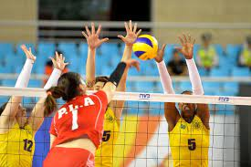

O voleibol ou vôlei é um esporte coletivo praticado em uma quadra dividida por uma rede. Duas equipes disputam a partida com o objetivo de tocar a bola no campo adversário, a qual deve ser arremessada por cima da rede. O esporte é um dos mais populares no Brasil e no mundo em termos de praticantes e audiência.
Os fundamentos básicos do voleibol são cinco:
Esses fundamentos são técnicas que começaram a ser executados nos jogos e acabaram se tornando uma prática do vôlei.
Regras do voleibol
O vôlei utiliza vários diferentes sistemas de jogo, dentre deles os mais famosos são o 5x1 e o 6x0.
esquema tático 5x1 é o mais utilizado atualmente e conta com apenas um levantador. Quando este jogador estiver na rede, ele tem duas opções de atacantes para distribuir a jogada. Quando estiver no fundo/defesa, ele terá três opções de atacantes na rede.
Sistema 5x1 é o que usam em competiçôes e torneios, é mais complicado porém mais eficiente.